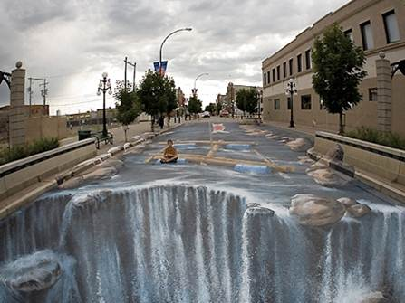
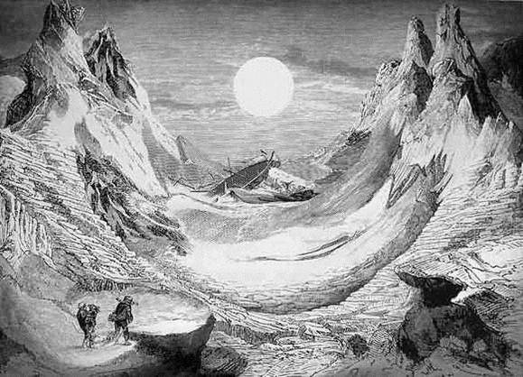

Sztuka anamorficzna
Wprowadzenie
Już od wieków artystów i malarzy pasjonowały różne formy zniekształcania rzeczywistości. Malując obrazy o zdeformowanych proporcjach próbowali nadać swoim dziełom niepowtarzalny charakter. Czasem również z premedytacją ukrywali prawdziwą treść swojego malowidła, którą można było następnie odczytać tylko w pewien z góry określony sposób. Sztuka tworzenia takich obrazów nosi nazwę sztuki anamorficznej. Termin ten pochodzi od dwóch greckich słów - ana morphe (ponownie stworzony). Aby możliwe było "ponowne odczytanie" takiego zdeformowanego obrazu, należy wymagać aby owa deformacja została wykonana dla całego dzieła w pewien konkretny, z góry określony sposób.Obrazem anamorficznym nazywamy obraz, którego proporcje zostały zniekształcone za pomocą odpowiedniego zrzutowania perspektywicznego, lub rzutowania połączonego z odbiciem w specjalnym zwierciadle.
Dzięki takim sztywnym zasadom deformacji, obraz anamorficzny może być zawsze "ponownie odczytany", poprzez spojrzenie na niego pod odpowiednim kątem, bądź też obejrzenie go w specjalnym zwierciadle. Wszystkie takie zwierciadła, służące do zniekształcania obrazu, nazywamy anamorfoskopami. Najczęściej są nimi walce i stożki lustrzane. Obrazy tworzone za ich pomocą mają zawsze w swoim środku charakterystyczną dziurę (pusty obszar) w kształcie koła. Służy ona do umieszczenia odpowiedniego anamorfoskopu, który następnie umożliwia odczytanie prawdziwej treść obrazu. Jak się okazuje, stworzenie malowidła, które ma być widoczne we właściwych proporcjach w zwierciadle walcowym, jest zadaniem nie do końca oczywistym. Na przestrzeni wieków problem ten przysparzał artystom poważnych trudności.
Wykład dla Szkoły Matematyki Poglądowej
Poniżej znajduje sie wykład, który wygłosiłem na Szkole Matematyki Poglądowej 26 sierpnia 2011 roku. Podczas wykładu prezentuję przykładowe obrazy zdeformowane anamorficznie, a także wyjaśniam matematykę jaka stoi za tego typu przekształceniem.Obrazki anamorficzne
Wiele obrazków anamorficznych można znaleźć w Google/obrazy wpisując hasło anamophic art. Kilka wybranych umieściłem w pliku PDF który można pobrać poniżej:Czy potrafisz odgadnąć co na poniższych zdjęciach jest namalowane, a co prawdziwe?





Obrazki anamorficzne w przekształceniu walcowym
